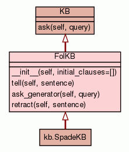

Class FolKB
source code

A knowledge base consisting of first-order definite clauses
>>> kb0 = FolKB([expr('Farmer(Mac)'), expr('Rabbit(Pete)'), ...
expr('(Rabbit(r) & Farmer(f)) ==> Hates(f, r)')]) >>>
kb0.tell(expr('Rabbit(Flopsie)')) >>>
kb0.retract(expr('Rabbit(Pete)')) >>> kb0.ask(expr('Hates(Mac,
x)'))[x] Flopsie >>> kb0.ask(expr('Wife(Pete, x)')) False
|
Add the sentence to the KB
- Overrides:
KB.tell
- (inherited documentation)
|
|
Yield all the substitutions that make query true.
- Overrides:
KB.ask_generator
- (inherited documentation)
|
|
Remove the sentence from the KB
- Overrides:
KB.retract
- (inherited documentation)
|